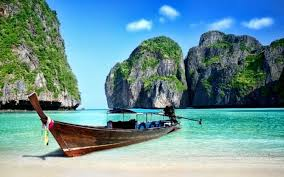
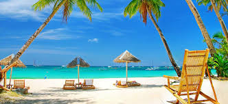
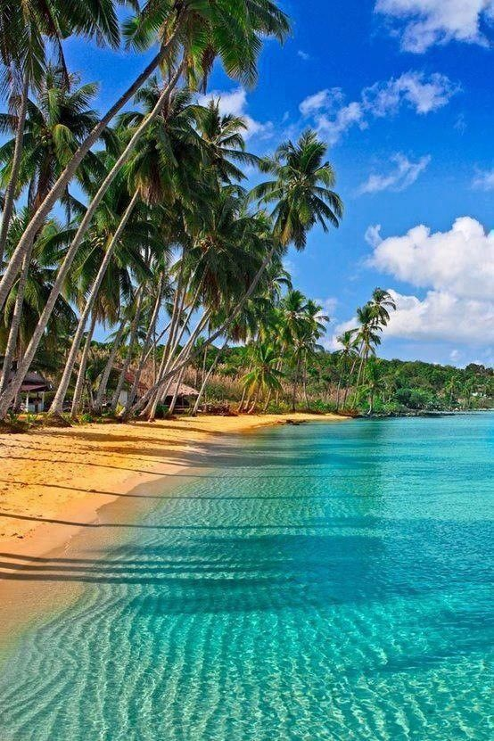
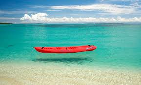
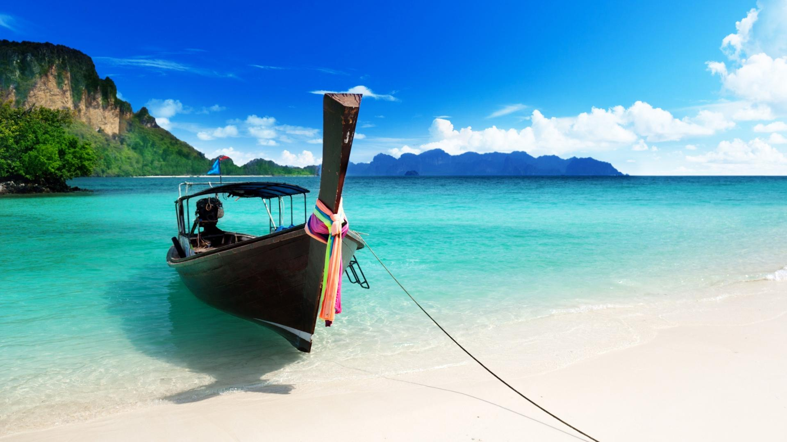
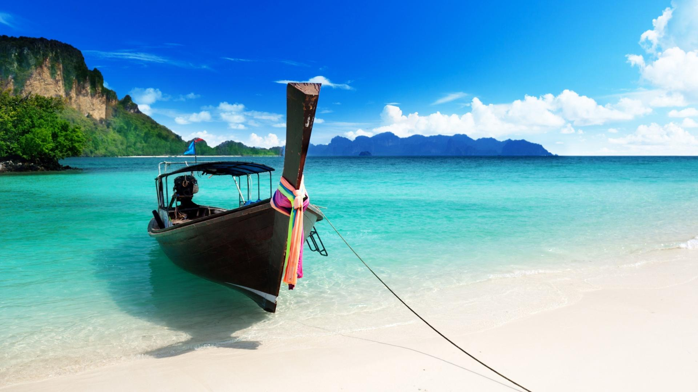
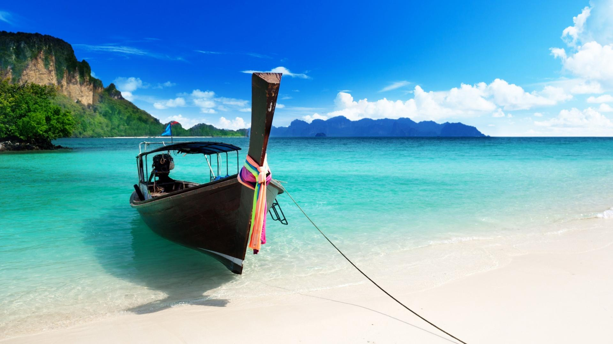
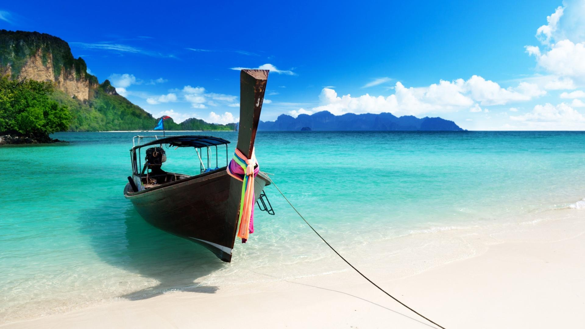

Creando mi propio camino




 



Mundo Marino es el oceanario más grande de la Argentina. Está ubicado en la ciudad de San Clemente del Tuyú, Partido de La Costa, Provincia de Buenos Aires, Argentina. Es además uno de los destinos turísticos recreativos más conocidos y exitosos del país. Su importancia y prestigio es también reconocida. Tiene 40 ha de parque para recorrer con distintas atracciones y shows.
Mundo Marino es el oceanario más grande de la Argentina. Está ubicado en la ciudad de San Clemente del Tuyú, Partido de La Costa, Provincia de Buenos Aires, Argentina. Es además uno de los destinos turísticos recreativos más conocidos y exitosos del país. Su importancia y prestigio es también reconocida. Tiene 40 ha de parque para recorrer con distintas atracciones y shows.